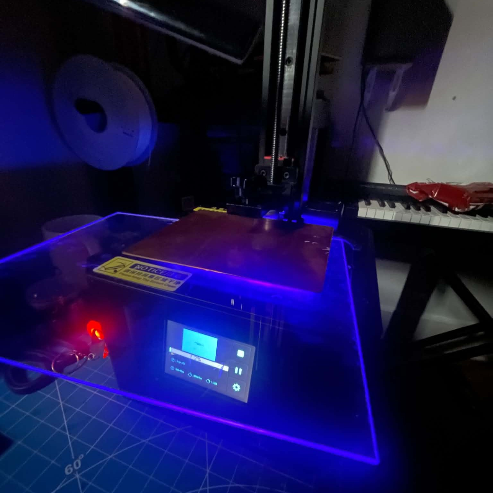
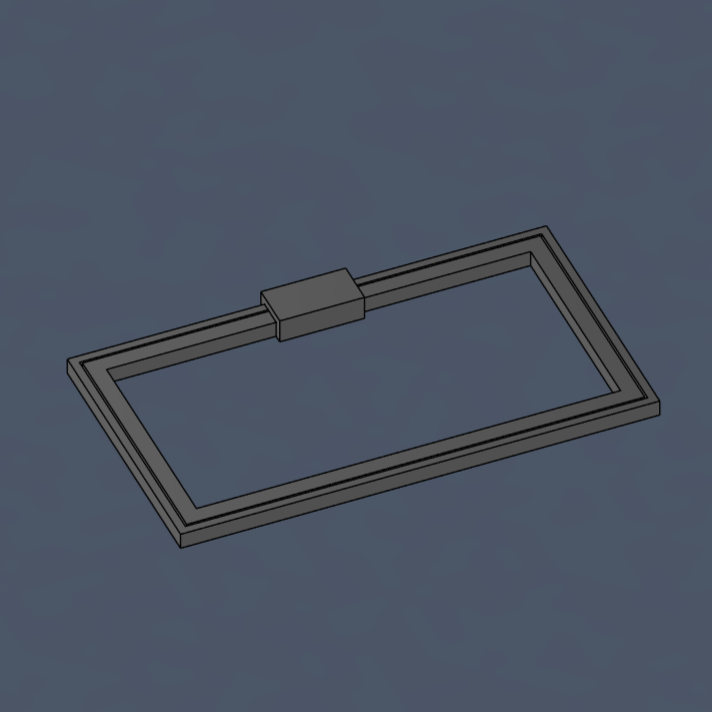
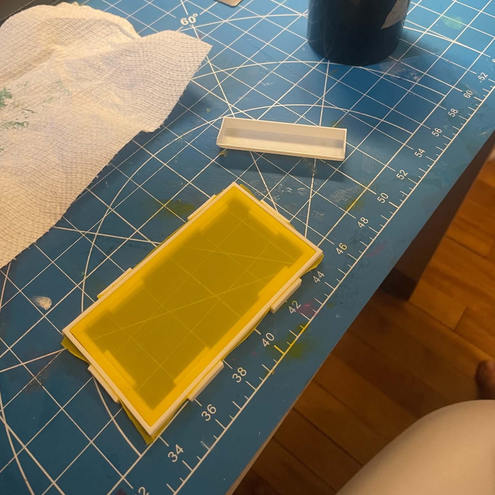
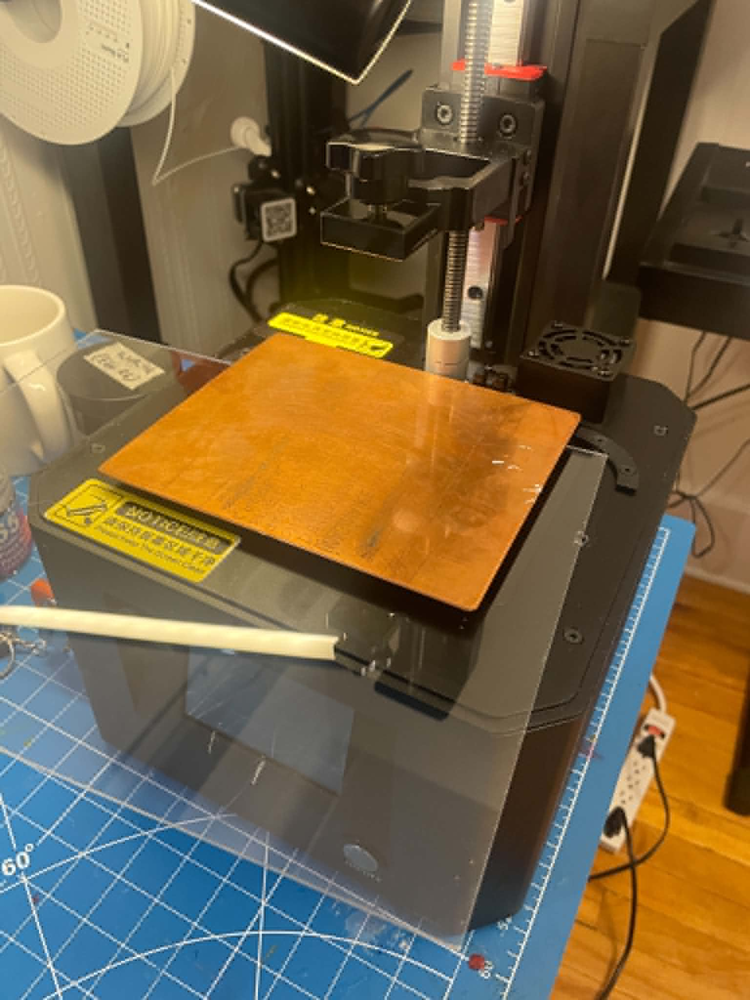
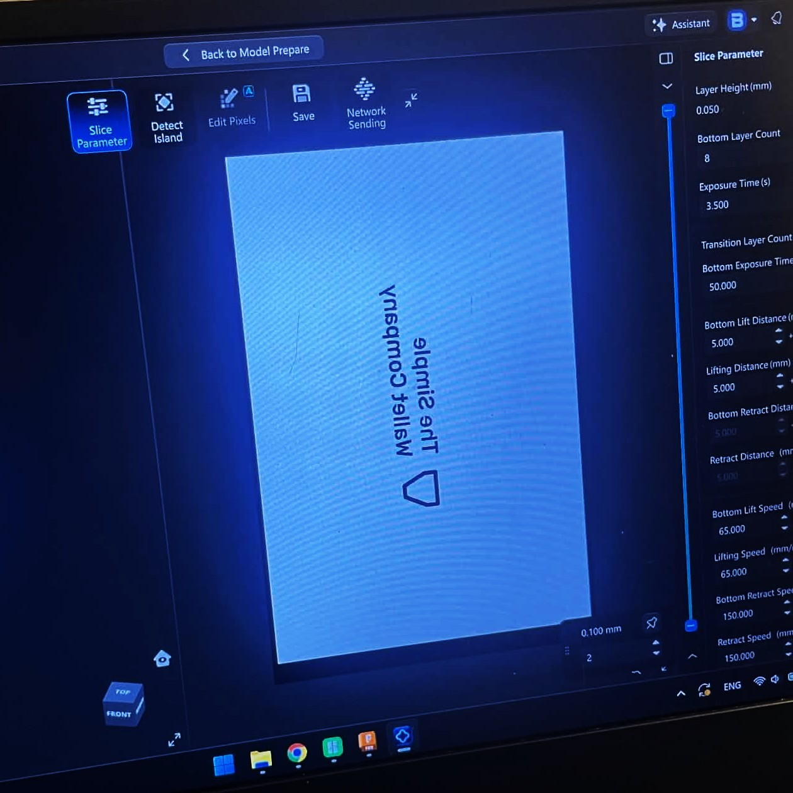
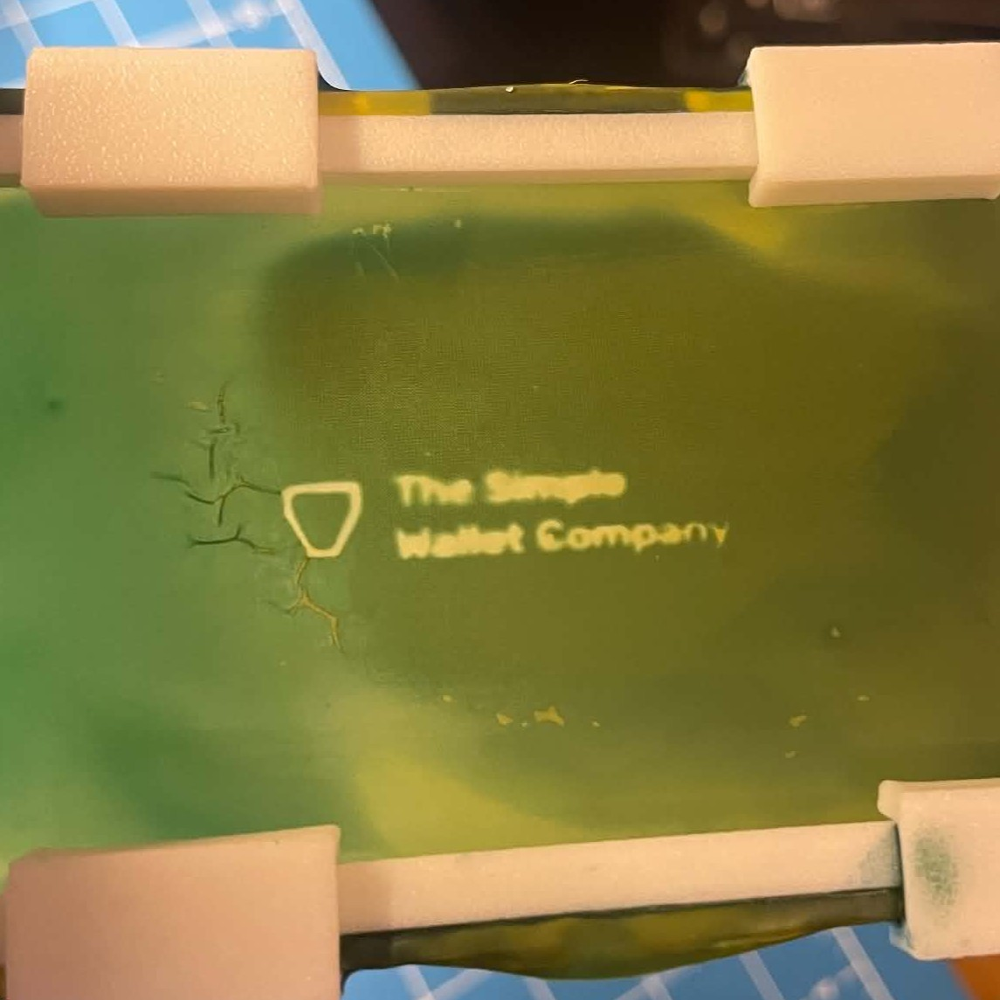
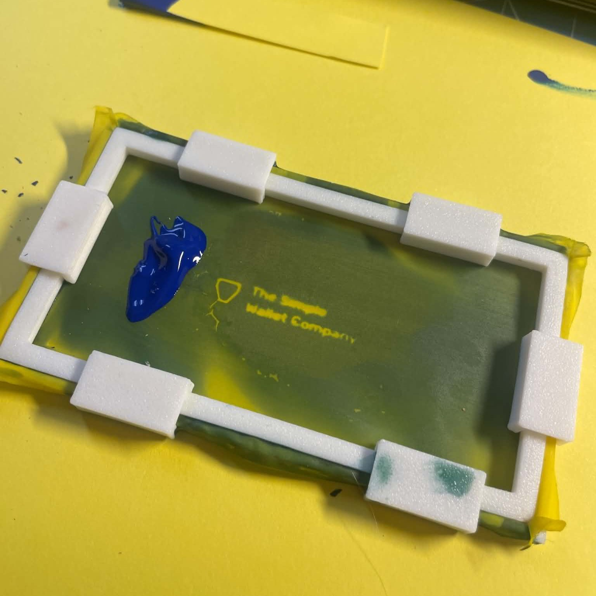
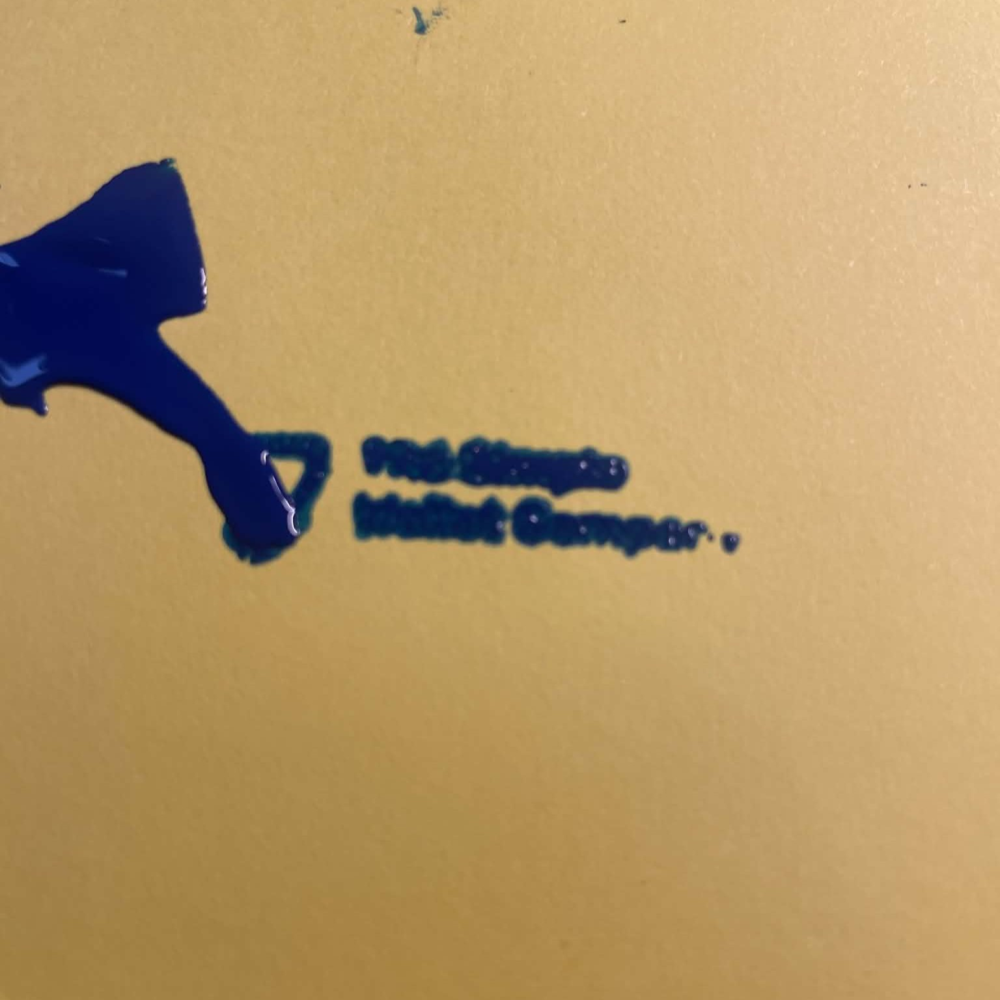

Exploration personelle
Mon idée est de détourner l'écran LCD UV de mon imprimante résine pour l'utiliser comme une insoleuse de table ultra-précise. En appliquant une émulsion photosensible sur ma toile de sérigraphie et en la posant directement sur l'écran qui affiche mon logo, le puissant rétroéclairage UV va durcir l'émulsion avec une netteté microscopique. C'est une technique DIY redoutable pour obtenir un pochoir parfait sans équipement d'insolation coûteux, idéale pour marquer proprement le logo de ma compagnie, *The Simple Wallet Company*, sur mes portefeuilles.
Voici le projet qui m'a inspiré à explorer la sérigraphie SLA. J'ai été fasciné par la précision et la netteté des pochoirs obtenus grâce à cette technique:
https://www.youtube.com/watch?v=Q3tYcRxLUs0J'ai rapidement modélisé mon propre cadre pour tendre ma toile de sérigraphie, et j'ai utilisé mon imprimante 3D pour créer un prototype fonctionnel. La soie que j'utilise est de calibre 200.


Après avoir appliqué l'émulsion sur ma toile, et après avoir attendu que celle-ci soit sèche, je l'ai posée sur l'écran de mon imprimante et exposée à la lumière UV en faisant attenttion de mettre une feuille de plastique protectrice entre l'écran et l'émulsion pour éviter de l'endommager. Le temps d'exposition était de 50 secondes, mais je pense que j'aurais dû l'exposer plus longtemps.


J'ai ensuite lavé la toile avec de l'eau pour enlever l'émulsion non durcie. Le résultat n'est pas extraordinaire, mais il prouve que la technique fonctionne. Il me reste à améliorer l'uniformité lorsque j'applique l'émulsion sur la toile, et à trouver le temps d'exposition idéal.


